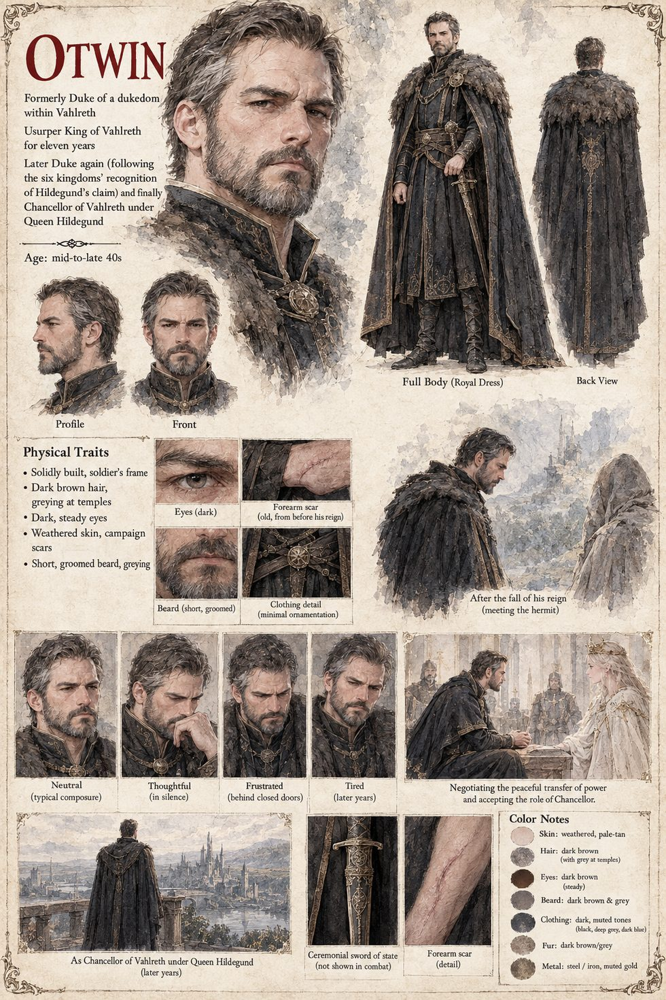

Otwin
Duke of Vahlreth, then its usurper king, then Duke again, then Hildegund's Chancellor · raised in the Faith of the Threefold Crown · mid-to-late forties by his sheet
A duke of Vahlreth who has believed for eleven private years in a document: a sealed account, written two generations back by a physician history did not trouble to name, of a thinness in the blood that makes its sufferer act in fright as though she knew what she could not. The one other case the physician knew was a minor lordling who survived an assassin's blade nobody could explain, governed the next decade on the settled conviction that whatever protected him would go on doing so, and cost his holding two ruinous wars and a famine. Otwin's conclusion, built into eleven years of certainty, is that the blood does not make a person dangerous, it makes a sovereign reckless, and a reckless sovereign on his border is a patient kind of catastrophe. He cannot act while Sigward sits healthy on the throne. When Sigward has been dead three months, poisoned so cleanly that every faction reads the physician's report as proof of its own murder, he knows that the Unbroken Blood, the law that voids a ducal claim for as long as one drop of the king's line breathes uncrowned, leaves a girl of seventeen as the one obstacle to his throne, and he comes anyway.
The reign that follows is competent, by every honest measure more competent than its beginning deserved, with fair harvests and kept roads and a border watched with a fear he shares with no one below his most trusted spies. He is a man of the Faith of the Threefold Crown, which his house has kept through four generations of nominal Vigil piety the way other houses keep an unmarried cousin, and on one sleepless night he kneels, badly, not to Auron but to the unhastening goddess of the kingdom he took by force, for no more specific mercy than the understanding he has spent eleven years and a great deal of blood pursuing. The manuscript counts seven attempts. It tells of an arrow poisoned by Hagen, twenty men at a ford, twelve in a clearing after Frida's letter, a bribed under-cook, a loosened flagstone, a carriage wheel and, for a sum greater than the twelve men and the border company together, the Hush. Behind the twenty-one dead at the ford and the clearing there are names he has made a private point of learning and has never told a living soul that he knows.
When force fails he turns to records and patience: Emmerich, who finds the same pale hermit in the registers across four generations, and Rosalind, who spends forty-one days near him and returns confessing that she has stopped being curious. From the pairing of the blood and the hermit he draws one conclusion more confident than the facts support, the kind a ledger invites when it balances too easily on the first pass: that the girl's luck and the hermit's nature are one phenomenon wearing two faces, and that removing the hermit will remove the certainty. He is afraid, for the first time in a long career of being right about difficult things, of what the thread is attached to. The flagstone and the carriage wheel, both of which the hermit was nowhere near, verified and re-verified by watchers Otwin trusts, are the facts his theory has no room for.
After the third failure he keeps a private tally more honest than any council report, not of dead assassins but of small deniable defections: Erchanbald's younger son at Hartenmark's university under a borrowed name, a guild's letter congratulating Hartenmark on a trade agreement nobody has finished negotiating, a Keeper asked three times in one week whether patience might run out on a usurper as readily as on anyone. A king can execute a traitor; he has no instrument for a loyal man quietly buying grain in a rival's currency. Ulrich rides to his court five weeks after the Hush on a pretext about grain tariffs, and Otwin sits very still that evening considering how much of two decades of believing in his own righteousness was a story smaller and more human than the one he told himself. Six chancelleries seal a recognition that changes nothing on the map and everything in the great houses, where the lords who called him king for a decade begin, in the careful deniable way such things begin, to call him merely Duke, a demotion of exactly one word.
He writes with his own hand to the one address in the kingdom he has come to trust more than his council, a hermit he has spent two years hunting and never once thought simply to ask: whether a man who has spent two years and a small fortune trying to kill a young woman might be permitted, at this humbled stage, to put one honest question to her guardian instead. The hermit comes on foot. Otwin asks whether he knows who it is he is protecting, and is told she is a good kid and that the hermit is only helping her. The one thing more he asks is the question the account taught him to fear above all others: not whether she is dangerous but whether she is careless. The hermit says she asks what a thing will cost and then asks again, and has never in all the years he has known her accepted the first number, and the theory has nowhere left to stand. It takes Otwin three days, the manuscript says, to finish grieving eleven years of being wrong; he then writes to Ulrich, unsealed, by a herald in his own colours.
At the table with Hildegund he does not defend the poisoning of her father and does not deny it, which she takes for the only honest answer he has left, and he accepts the Chancellorship in writing, through a channel that leads, for the first time, to his own hand. She tests him once, six months in, with a fabricated grain shortfall in a province that does not exist; it surfaces in none of his old channels, he understands what has been done within a week and says nothing for the rest of his life. He serves, by every surviving account, with a scrupulous, almost penitential competence until the end of both their reigns. The manuscript gives him no appearance. The sheet's mid-to-late forties, short brown hair going grey at the temples, groomed greying beard, dark fur-collared royal dress with a chain and a ceremonial sword are its own.